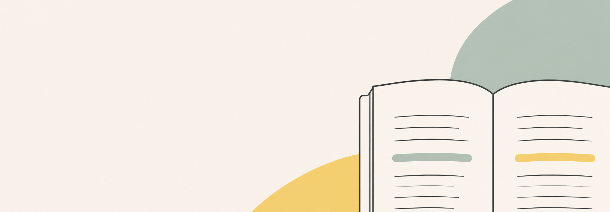

DESIGN NOTES
Designing Intuitive Human Interfaces
设计直观的人机交互界面
Clarity, contrast, and alignment create an effortless reading experience across devices.
清晰度、对比度与对齐原则共同构成自然、轻松的阅读体验。

A good interface preserves hierarchy without asking the reader to notice the interface itself.
优秀的界面会保留清晰层级，却不会迫使读者把注意力放在界面本身。
“The best reading tools quietly disappear behind the content.”